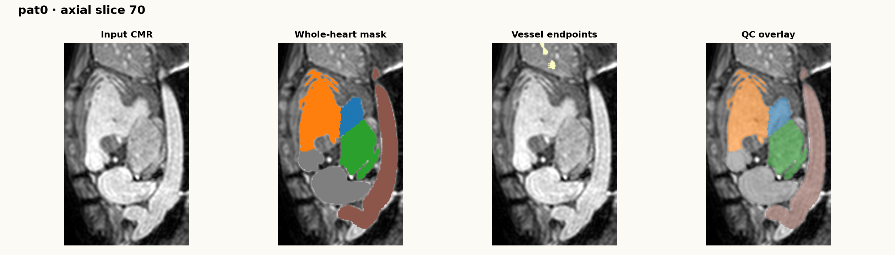
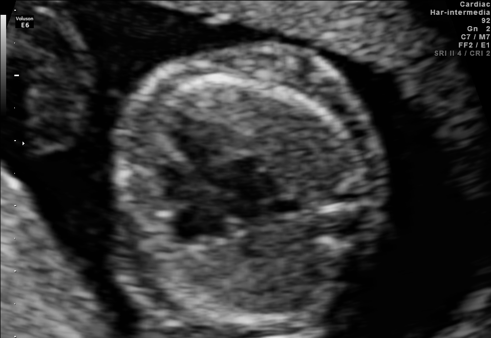

Dataset Atlas
데이터 목적·modalities·labels·access를 비교합니다.
Dataset atlas · evidence before models
같은 “CHD dataset”이라는 이름 아래에도 2D ultrasound, 3D CT, 3D CMR, fetal brain MRI, image–tabular multimodal data는 서로 다른 질문에 답합니다. 이 카탈로그는 데이터의 단위·라벨·접근성·현재 검증 상태·허용되는 주장을 분리합니다.
How to read this page
Catalog는 어떤 데이터가 존재하고 무엇을 담는지 비교하는 지도입니다. Dataset report는 실제로 내려받은 파일의 구조·무결성·QC·EDA를 기록합니다. Model review는 그 데이터에서 검증할 수 있는 방법과 그렇지 않은 방법을 구분합니다.
따라서 아래의 “현재 상태”는 성능이 아니라 증거 수준입니다. 공개 landing page만 읽은 데이터, archive를 직접 열어 구조를 확인한 데이터, 전체 전처리와 manifest를 완성한 데이터는 같은 신뢰도로 다루지 않습니다.
데이터 목적·modalities·labels·access를 비교합니다.
다운로드·checksum·파일 pairing·QC·EDA를 남깁니다.
task·split·metric·failure mode에 맞춰 모델을 평가합니다.
Modality map
whole-heart structure
biometrics & masks
diagnosis & anatomy
images + records
segmentation benchmark
01 · executed audit
3D cardiovascular MR for whole-heart segmentation in CHD
공식 cropped_norm 배포본을 내려받아 60 subject manifest, metadata join, shape·spacing·label QC까지 완료했습니다.

HVSMR-2.0은 CHD 환자의 3D CMR 60개와 4개 심장방·4개 대혈관의 manual segmentation을 제공하는 whole-heart benchmark입니다. image·segmentation·endpoint mask는 NIfTI로 배포되며, endpoint는 혈관의 optional extent를 다룰 때 공정한 비교를 돕는 보조 mask입니다.
What it supports. 3D segmentation, topology/structure-aware loss, protocol·age·severity subgroup audit. What it does not support by itself. 태아 초음파 비디오의 CHD screening 성능 주장이나 temporal video model 평가.
02 · public archive checked
Four-chamber ultrasound for fetal cardiac biometric measurement
공개 CC-BY archive를 열어 split·file tree·mask·ellipse annotation 형식을 확인했습니다. 아직 모델 학습·전처리 benchmark는 실행하지 않았습니다.

imageFOCUS는 four-chamber view ultrasound 300장을 expert sonographer 도움으로 cardiac·thoracic region에 manual annotation한 공개 데이터입니다. 확인한 archive는 training 200, validation 50, testing 50 image로 나뉘며, 각 사례에 binary mask와 ellipse parameter text가 있습니다.
What it supports. four-chamber localization, cardiac/thorax segmentation, mask-derived diameter/ratio estimation, quality-aware 2D baseline. What needs verification. per-image CHD diagnosis label을 제공하는 classification dataset으로 간주하면 안 됩니다. 공개 설명은 biometric estimation을 중심으로 합니다.
03 · public source reviewed
3D CT for congenital heart disease classification
공식 paper·repository의 label schema와 Kaggle 배포 경로를 검토했습니다. 이 저장소에서는 raw archive QC를 아직 수행하지 않았습니다.
ImageCHD는 다양한 CHD를 포괄하는 3D CT 110개와 label을 공개한 dataset입니다. 공식 repository는 7개 구조 label—LV, RV, LA, RA, myocardium, aorta, pulmonary artery—와 diagnosis information xlsx의 후속 업데이트를 안내합니다. 원 논문은 구조 변화가 크지만 local tissue change로 설명되지 않는 CHD classification의 난점을 문제로 둡니다.
What it supports. 3D CT structure segmentation, diagnosis-aware structural representation, selective prediction baseline. Transfer caution. CT attenuation pattern과 CMR/ultrasound appearance는 다르므로 cross-modality experiment는 representation transfer 가설이지 직접적인 clinical validation이 아닙니다.
04 · access to verify
Fetal diagnostic images with maternal clinical records
프로젝트 페이지의 dataset·code·data link를 확인했습니다. 이 저장소에는 파일을 내려받지 않았으므로 exact schema·license·split은 access 후 manifest로 재검증해야 합니다.
CARDIUM은 fetal ultrasound·echocardiographic images와 maternal clinical records를 한데 다루는 prenatal CHD detection dataset으로 소개됩니다. project page는 image-only, tabular-only, multimodal 결과를 비교하며, cross-attention 기반 fusion model을 제안합니다. 이 dataset의 가치는 modality를 추가하는 데만 있지 않고, 각 modality가 결측·품질 저하·imbalance를 다르게 갖는 현실을 명시한다는 데 있습니다.
What it supports after access audit. patient-level multimodal baseline, missing-modality robustness, subgroup/split audit. Critical safeguard. image–record join key와 patient-level split을 먼저 검증하지 않으면 record leakage로 성능이 과대평가될 수 있습니다.
05 · adjacent benchmark
Fetal Tissue Annotation Dataset for fetal brain MRI
공식 Data Descriptor를 검토했습니다. 심장 CHD dataset은 아니며, fetal MRI segmentation의 preprocessing·quality·annotation benchmark로 분리해 다룹니다.
FeTA는 gestational age 20–33주의 pathological·non-pathological fetal brain MRI reconstruction 50개에 7 tissue class manual segmentation을 제공하는 public benchmark입니다. 여러 low-resolution acquisition을 motion correction·super-resolution으로 정리한 volume과 annotation을 사용하므로, fetal imaging에서 reconstruction quality와 label protocol이 task 정의에 얼마나 큰 영향을 주는지 학습하는 좋은 참조점입니다.
What it supports. fetal MRI preprocessing, reconstruction-quality awareness, multi-class segmentation protocol comparison. What it does not support. cardiac anatomy segmentation 또는 CHD diagnosis model의 direct benchmark.
Decision before training
데이터가 다르면 “좋은 모델”의 정의도 달라집니다. 아래는 현재 사이트에서 과장 없이 시작할 수 있는 실험 단위입니다.